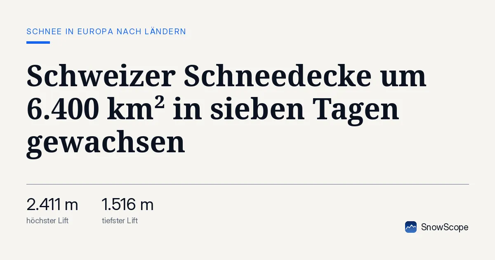

Schweizer Schneedecke um 6.400 km² in sieben Tagen gewachsen
In nur sieben Tagen gewannen die Schweizer Berge 6.410 km² Schneebedeckung – ein Zuwachs von 48 Prozent gegenüber der Vorwoche.
Die Live-Schneeprognose für Anzère in der SnowScope-AppSchneehöhen, Pulverschnee-Alarme und 3D-Karte, gratis.
Wie sich die Woche aufgebaut hat
Das Wachstum war konstant und steil. Am letzten Sonntag, 21. November, waren 13.470 km² der 31.030 km² großen Schweizer Untersuchungsfläche schneebedeckt. Heute beträgt diese Fläche 19.880 km². Jeden Tag dieser Woche kam mehr Schneebedeckung hinzu, mit dem Höhepunkt um den 20. November, als Neuschnee aus dem Dreitages-Fenster in den höchsten Zonen 99 cm erreichte.
Diese Entwicklung markiert eine scharfe Wende gegenüber Anfang November. Der erste echte Schneefall kam erst am 22. November ins System, wir befinden uns also in der Anfangsphase der Saison. Dennoch deutet die Schneeakkumulation der vergangenen Woche darauf hin, dass sich das Muster gefestigt hat: Kalte Luft hält sich nun über den hohen Gebirgsketten.
| Tag | Weiße Fläche | Max. Neuschnee in 3 Tagen | Schneereichstes Skigebiet |
|---|---|---|---|
| Montag, 16. November | 16.510 km² | 22 cm | Ovronnaz |
| Dienstag, 17. November | 14.750 km² | 45 cm | Zermatt |
| Mittwoch, 18. November | 16.060 km² | 64 cm | Glacier 3000 |
| Donnerstag, 19. November | 18.160 km² | 83 cm | Glacier 3000 |
| Freitag, 20. November | 19.900 km² | 99 cm | Glacier 3000 |
| Samstag, 21. November | 19.880 km² | 81 cm | Anzère |

Wo der Schnee heute liegt
Die Schneegrenze liegt nun etwa bei 1.200 m Höhe. Darunter ist die Bedeckung spärlich – nur 4 Prozent der Zone zwischen 500 m und 1.000 m tragen Schnee, die Mächtigkeiten betragen im Durchschnitt null. Der richtige Schnee beginnt bei 1.000 m, wo 61 Prozent des Bereichs mit durchschnittlich 3 cm bedeckt sind. Von 1.500 m aufwärts ist die Bedeckung nahezu vollständig: in der Zone 1.500–2.000 m beträgt die mittlere Mächtigkeit 11 cm bei 98 Prozent Bedeckung; über 2.000 m ist der Schnee dick und lückenlos.
In der höchsten Kategorie über 2.500 m erreichen mittlere Mächtigkeiten 30 cm über die gesamte 100 Prozent weiße Fläche. Hier sitzt der Großteil der Schweizer Gletscher und des Hochlagen-Skiterrains, daher sind frühjahrshafte Abfahrten an der Spitze des Netzwerks bereits realistisch.

Die regionalen Spitzenreiter
Zwei Regionen haben alle anderen übertroffen. Die Walliser Alpen, Heimat von Anzère, Zermatt und Ovronnaz, legten in den vergangenen 72 Stunden 164 cm zu – die höchste Summe, die wir messen. Das Berner Oberland, wo Glacier 3000 betrieben wird, addierte im gleichen Zeitfenster 115 cm hinzu.
Anzère führt heute mit 86 cm an seiner Messstelle, gefolgt von Ovronnaz mit 62 cm und Zermatt mit 60 cm. Alle drei liegen deutlich über ihrer typischen Mächtigkeit Mitte November; Anzère erreicht 338 Prozent des Normalwerts für dieses Datum. Glacier 3000 mit 64 cm hat 98 cm in drei Tagen akkumuliert und liegt bei 308 Prozent des Normalwerts – ein Zeichen, dass die Hochlagen-Gletscherzone die Feuchtigkeit aus den Systemen einfängt, die von Nordwesten heranrücken.
Was fiel und was kommt als Nächstes
In den vergangenen 24 Stunden allein erhielten die höchsten Zonen 16 cm Neuschnee. In den vergangenen drei Tagen sahen Teile der Walliser Alpen 164 cm akkumulieren, während breitere Zonen über 2.000 m in der Schweiz insgesamt durchschnittlich etwa 81 cm aufbauten. Das ist ein heftiger Dreitages-Schub für Ende November.
Die Vorhersage zeigt keine Abschwächung. Morgen, 22. November, erwarten wir den intensivsten einzelnen Tag: bis zu 40 cm in den Gipfelzonen. In den nächsten drei Tagen könnten die hohen Berge weitere 59 cm oben drauf sehen. Bis Ende November deutet unsere längerfristige Vorhersage auf eine ruhigere zweite Woche hin, aber die nächsten sieben Tage sollten etwa 74 cm mehr zu den Hochgipfeln bringen.
Trend über die Alpen diese Woche
Das benachbarte Österreich hat ähnliche Aktivität, aber mit niedrigerer Intensität erlebt: 56 Prozent Schneebedeckung mit 35 cm Prognose für die nächste Woche. Frankreich verfolgt ein anderes Muster – nur 14 Prozent weiße Fläche in unserem Untersuchungsgebiet, obwohl die Region Orelle in den Hochalpen 136 cm aufgefangen hat und 92 cm voraus zeigt. Die Systeme bahnen sich ihren Weg durch den Schweizer Bogen am intensivsten.
Die Unsicherheit in all diesen Prognosen bleibt real. Frühjahrs-Schnee ist dünn, wo er gerade gelandet ist, und in manchen Mittellage-Zonen – zwischen 1.000 m und 1.500 m – können Felsen noch durchbrechen. Schau vor jeder Abfahrt abseits der Piste in das offizielle Lawinenunglück. Für Pistenskifahrer bieten obere Höhenlagen das sicherste und tiefste Skivergnügen.
Was die Zahlen bedeuten
Ein Zuwachs von 48 Prozent in einer Woche ist für Ende November signifikant. Der Weiß-Anteil, der auf 64 Prozent der vermessenen Gebiete klettert, liegt deutlich über dem typischen Durchschnitt für dieses Datum und zeigt, dass die Saison schnell Fahrt gefunden hat. Die Tatsache, dass 238 der 279 vermessenen Schweizer Skigebiete nun Schneemächtigkeiten aufzeichnen – verglichen mit deutlich weniger noch vor wenigen Tagen – bestätigt die Ausbreitung.
Die Zahlen, die du siehst, sind Durchschnittswerte und Schätzungen über Rasterzellen, nicht Messungen an einem einzelnen Punkt. Schau in der SnowScope-App nach deinem gewählten Skigebiet und der Hangausrichtung, um deinen nächsten Bergtag zu planen.
Tipps für Skifahrer
- Ski über 2.000 m fahren, wo die durchschnittliche Schneemächtigkeit 17 cm oder mehr beträgt und die Bedeckung vollständig ist. Tiefere Höhenlagen bleiben unter 1.500 m fleckig.
- Morgen, 22. November, beobachten – der intensivste Schneefall erwartet. Plane eine Hochlagen-Tour, falls die Bedingungen es erlauben, bevor der Wind zunahme auf den Anmarsch.
- Konsultiere das offizielle Lawinenunglück, wenn du vorhast, die Piste zu verlassen. Frühjahrs-Bretter können sich an steilem Gelände auch bei bescheidenen Schneelasten bilden.
- Die Walliser Alpen und das Berner Oberland haben den meisten Neuschnee aufgefangen. Anzère, Glacier 3000 und Ovronnaz sollten in den nächsten Tagen die beste Bedeckung im Netzwerk bieten.
- Dein gewähltes Skigebiet kann mehr oder weniger als die regionale Zahl aufweisen – nutze die App, um die Mächtigkeit in deiner bevorzugten Höhe und Ausrichtung zu checken.
Zu diesen Zahlen
Die Schneehöhen der Skigebiete sind der meiste Schnee in den oberen Hängen am angegebenen Tag; es sind Schätzungen für eine Fläche, keine Messung an einem Punkt. Prognosen können sich ändern. Lies vor dem Freeriden immer den offiziellen Lawinenlagebericht.
Diesen Bericht zitieren
Für Forschung, Lehre oder Presse: Zahlen und Grafiken sind unter CC BY 4.0 mit dieser Quellenangabe frei nutzbar.
SnowScope (2026), Schweizer Schneedecke um 6.400 km² in sieben Tagen gewachsen, https://snowscope.app/blog/de/2026/11/switzerland-snow-cover-gain-this-week-21-november-2026.html, abgerufen am 2026-11-21
SnowScope (Atlas Labs). (2026, November 21). Schweizer Schneedecke um 6.400 km² in sieben Tagen gewachsen. SnowScope snow reports. https://snowscope.app/blog/de/2026/11/switzerland-snow-cover-gain-this-week-21-november-2026.html
BibTeX
@misc{snowscope2026switzerlandsnowcovergain,
author = {{SnowScope (Atlas Labs)}},
title = {Schweizer Schneedecke um 6.400 km² in sieben Tagen gewachsen},
year = {2026},
month = nov,
howpublished = {\url{https://snowscope.app/blog/de/2026/11/switzerland-snow-cover-gain-this-week-21-november-2026.html}},
note = {Published 2026-11-21 11:31 UTC; accessed 2026-11-21}
}· CC BY 4.0 · Methoden, Daten und Werkzeuge →
Anzère: Schnee und Temperatur nach Höhe, dieser Winter vs letzter (Werkzeuge) →
Anzère folgen
Gratis: eine Nachricht, wenn Neuschnee kommt, und jeden Morgen die Vorhersage.